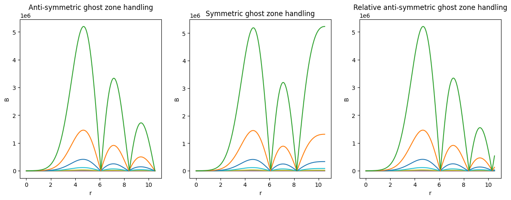
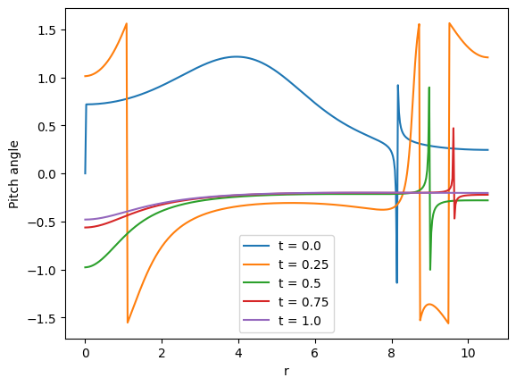
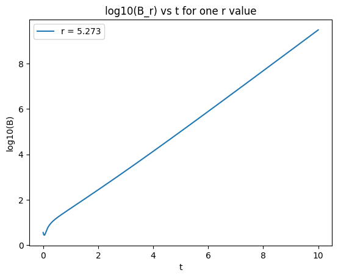
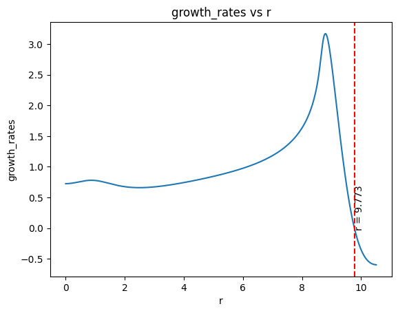
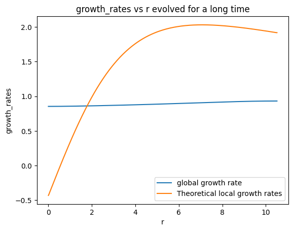

NUMERICAL METHODS
This project focuses on computational simulations of galactic dynamos, exploring the intricate dynamics of magnetic fields within galaxies. Using Python, the equations governing magnetohydrodynamics (MHD) are solved to understand how magnetic fields evolve and interact with the surrounding astrophysical environment. By analyzing the results obtained from these simulations, insights into the generation and maintenance of magnetic fields in galaxies can be gained. The project includes detailed documentation, including Jupyter notebooks hosted on GitHub, and a comprehensive project report in PDF format.
I have to solve the equations in R. The codes are written in python. More details on the codes I implemented are Given in the following sections.
Using ghost zones for boundary conditions
In computational physics and engineering, especially in simulations involving partial differential equations (PDEs), boundary conditions play a crucial role in defining the behavior of the system at the boundaries of the computational domain. One common approach to implement boundary conditions is through the use of ghost zones or ghost cells.
Concept:
The idea behind ghost zones is to extend the computational domain by adding additional grid points adjacent to the boundaries. These additional grid points, called ghost cells or ghost zones, are used to enforce boundary conditions without directly affecting the original domain.
Implementation:
When implementing ghost zones, the values of variables at the ghost cells are typically determined based on the specified boundary conditions. These values act as placeholders and are updated iteratively during the simulation to maintain consistency with the boundary conditions.
Types of Boundary Conditions:
Ghost zones can be used to implement various types of boundary conditions, including:
- Dirichlet Boundary Conditions: In this case, the values at the ghost cells are set to specific prescribed values.
- Neumann Boundary Conditions: Here, the values at the ghost cells are determined based on the derivative of the solution at the boundary.
- Periodic Boundary Conditions: For periodic domains, the values at the ghost cells are obtained by wrapping around the values from the opposite boundary.
- Robin Boundary Conditions: These conditions involve a combination of Dirichlet and Neumann conditions, where the values at the ghost cells are determined by a linear combination of the solution and its derivative at the boundary.
Advantages:
Using ghost zones for boundary conditions offers several advantages:
- It allows for a consistent and systematic treatment of boundary conditions across different types of simulations.
- It enables the use of standard numerical methods within the computational domain without modification.
- It facilitates parallelization and optimization strategies by maintaining a regular grid structure.
Overall, ghost zones provide a flexible and efficient framework for incorporating boundary conditions in computational simulations, making them essential in various fields of scientific computing.
6th order finite differencing
The 6th order finite difference approximation for the second derivative \( f'' \) of a function \( f(x) \) is given by:
\[ f''(x) \approx \frac{-f(x + 3h) + 9f(x + 2h) - 45f(x + h) + 45f(x - h) - 9f(x - 2h) + f(x - 3h)}{h^2} \]
Similarly, the 6th order finite difference approximation for the first derivative \( f' \) of a function \( f(x) \) is:
\[ f'(x) \approx \frac{-\frac{1}{60}f(x + 3h) + \frac{3}{20}f(x + 2h) - \frac{3}{4}f(x + h) + \frac{3}{4}f(x - h) - \frac{3}{20}f(x - 2h) + \frac{1}{60}f(x - 3h)}{h} \]
Where \( h \) is the step size between the discrete points.
4th order Runge-Kutta methods
The Runge-Kutta 4th order (RK4) method is a numerical technique used to solve ordinary differential equations (ODEs). It provides a balance between accuracy and computational complexity, making it one of the most popular methods for solving ODEs numerically.
The general form of the RK4 method for solving an initial value problem with a first-order ODE is:
\[ y_{n+1} = y_n + \frac{h}{6}(k_1 + 2k_2 + 2k_3 + k_4) \]
Where:
- \( y_n \) is the approximation of the solution at time \( t_n \).
- \( h \) is the step size.
- \( k_1, k_2, k_3, \) and \( k_4 \) are slopes determined at different points using the function \( f(t, y) \) representing the ODE.
The algorithm is as follows:
- Compute \( k_1 \) using the function \( f(t_n, y_n) \).
- Compute \( k_2 \) using the function \( f(t_n + \frac{h}{2}, y_n + \frac{h}{2}k_1) \).
- Compute \( k_3 \) using the function \( f(t_n + \frac{h}{2}, y_n + \frac{h}{2}k_2) \).
- Compute \( k_4 \) using the function \( f(t_n + h, y_n + hk_3) \).
- Update the solution \( y_{n+1} \) using the weighted average of the slopes \( k_1, k_2, k_3, \) and \( k_4 \).
The RK4 method offers relatively high accuracy compared to simpler methods like Euler's method, making it suitable for a wide range of applications in science and engineering.
TASK 1
Aim
The aim of this study is to solve the diffusion equation in the radial coordinate \( r \). Our primary objective is to determine the spatial and temporal derivatives of the mean magnetic field components \( \overline{B_r} \) and \( \overline{B_{\phi}} \). Subsequently, we aim to ascertain the mean magnetic field value and employ an exponential decay model to discern the decay constant. Through this investigation, we seek to explore the evolution of the magnetic field magnitude and the exponential decay rate. Furthermore, our analysis extends to examining the spatial solution for \( \overline{B_r} \) and \( \overline{B_{\phi}} \), as well as calculating the pitch angle of the mean magnetic field denoted by \( p \). Additionally, we explore various boundary conditions and seed fields to assess their impact on the obtained results.
Equations
For this task, we address the diffusion equation while omitting the terms involving \( \nabla \times (\overline{V} \times \overline{B}) \) and \( \alpha \). Consequently, the equations to solve become:
For \( \overline{B_r} \):
\[ \frac{\partial \overline{B_r}}{\partial t} = \eta_t \left[ \frac{\partial}{\partial r} \left( \frac{1}{r} \frac{\partial}{\partial r}(r \overline{B_r}) \right) + \frac{\partial^2 \overline{B_r}}{\partial z^2} \right] \]For \( \overline{B_{\phi}} \):
\[ \frac{\partial \overline{B_{\phi}}}{\partial t} = \eta_t \left[ \frac{\partial}{\partial r} \left( \frac{1}{r} \frac{\partial}{\partial r}(r \overline{B_{\phi}}) \right) + \frac{\partial^2 \overline{B_{\phi}}}{\partial z^2} \right] \]Since both \( \overline{B_r} \) and \( \overline{B_{\phi}} \) share the same equation form, we generalize it to:
\[ \frac{\partial \overline{B}}{\partial t} = \eta_t \left[ \frac{\partial}{\partial r} \left( \frac{1}{r} \frac{\partial}{\partial r}(r \overline{B}) \right) + \frac{\partial^2 \overline{B}}{\partial z^2} \right] \]Under the no-\( z \) approximation, the equations for \( \overline{B_r}(r) \) and \( \overline{B_{\phi}}(r) \) simplify to:
\[ \frac{\partial \overline{B}}{\partial t} = \eta_t \left[ \frac{\partial^2 \overline{B}}{\partial r^2} + \frac{1}{r} \frac{\partial \overline{B}}{\partial r} - \frac{\overline{B}}{r^2} - \frac{\pi^2}{4 h^2} \overline{B} \right] \]Expanding the equation yields:
\[ \frac{\partial \overline{B}}{\partial t} = \eta_t \left[ \frac{\partial^2 \overline{B}}{\partial r^2} + \frac{1}{r} \frac{\partial \overline{B}}{\partial r} - \frac{\overline{B}}{r^2} - \frac{\pi^2}{4 h^2} \overline{B} \right] \]These are the equations we need to solve for task 1.
Method
The equations we aim to solve take the form:
\[ \frac{\partial \overline{B_i}}{\partial t} = \eta_t\left(\frac{\partial}{\partial r}\left[\frac{1}{r}\frac{\partial}{\partial r}\left(r\overline{B_i}\right)\right] - \frac{\pi^2 \overline{B_i}}{4h^2}\right)\]Here, \(i\) represents both \(r\) and \( \phi \).
A sinusoidal initial condition is imposed on both \( \overline{B_r} \) and \( \overline{B_{\phi}} \). The spatial derivatives were calculated with this initial condition and a radial step size \( dr \). We employed the sixth-order finite differencing method. To ensure accuracy, we extended the computational domain by adding three cells to the left and right sides of the boundary, employing relative antisymmetric ghost cells enforcing the simplest boundary condition, i.e., 0 on both sides. The output of finite differencing was then utilized in the time derivative function, and we performed RK4 integration.
Subsequently, we changed the initial condition and used it to evolve the \( \overline{B_{\phi}} \) field. The implications of different seed magnetic fields were studied by comparing the time evolution of \( \overline{B_{\phi}} \) and \( \overline{B_r} \).
Once \( \overline{B_{\phi}} \) and \( \overline{B_r} \) are solved for, the pitch angle can be calculated using the formula:
\[\tan(p) = \frac{\overline{B_r}}{\overline{B_{\phi}}}\]where \( -\frac{\pi}{2} < p \leq \frac{\pi}{2} \).
From \( \overline{B_{\phi}} \) and \( \overline{B_r} \), we calculate the total mean magnetic field:
\[\overline{B} = \sqrt{\overline{B_r}^2 + \overline{B_{\phi}}^2}\]The time evolution of this field is studied. Subsequently, we fit the values of the field obtained into an exponential decay model. To achieve this, we plot the \( \log_{10} \) values of \( B \) on the \( y \) axis and time on the \( x \) axis; the slope of this plot provides the value of the decay constant. Initially, we plot this for a single \( r \), then we plot a decay constant vs \( r \) plot.
Results

This image depicts the initial condition provided for \( \overline{B_r} \), which is a simple sine function. Subsequently, this condition is altered while solving for \( \overline{B_{\phi}} \), allowing us to examine the influence of seed fields over time.

The plot illustrates the time evolution of \( \overline{B_r} \). It is evident that the magnetic field decays as time progresses.
The animation presents the time evolution of \( \overline{B_r} \).

To examine the impact of the choice of initial condition on field evolution, we employ two different initial functions, as depicted. It is important to note that these functions also have different boundary conditions.
This plot illustrates the time evolution of two magnetic fields with different initial conditions.

This animation illustrates the time evolution of the mean magnetic field. After obtaining \( \overline{B_r} \) and \( \overline{B_{\phi}} \), we calculate the mean magnetic field using the theory discussed earlier. Due to the different initial values of \( \overline{B_{\phi}} \), the boundary condition is not satisfied on the right side.

The pitch angles found are plotted against radius and evolved over time, as shown.

This graph showcases the magnetic field strength over different \(r\), which follows an exponentially decaying trend.
Here we plot the logarithm of the mean magnetic field against time to determine the decay constant. This analysis is conducted for a single radius. The decay constant in this case is -0.547.
Lastly, we plot the decay constant against all radii. It can be observed that the decay constant is negative for all radii, indicating magnetic field decay.
Conclusions
- Evolution of Magnetic Field Magnitude and Decay Rate:
- The magnetic field magnitude consistently decays over time, as expected due to diffusion processes.
- The exponential decay rate is negative, thus our decay model is a good fit and can explain the field evolution. Thus we can conclude that the decay equation is a valid solution for \( \overline{B} \)
- The plot of \(\log_{10}\) scaled value of magnetic field against time was a straight line plot. The slopes are negative, because of the decay nature of field.
- Evolution of Spatial Solutions for \( \overline{B_r} \) and \(\overline{B_{\phi}} \), and Pitch Angle \( p \):
- The spatial solutions for \( \overline{B_r} \) and \( \overline{B_{\phi}} \) follow an exponential decay pattern, though discrepancies in boundary conditions may affect accuracy.
- The pitch angle \( p \) of the mean magnetic field exhibits minimal variation over time. This might be because of the initial conditions we used to evolve \(r\) and \(\phi\) fields.
- Impact of Different Boundary Conditions:
- Boundary conditions significantly influence magnetic field behavior, with challenges in maintaining integrity.
- Relative anti-symmetric ghost zones have limitations in preserving boundary conditions, especially with the complex diffusion equation.
- This is because in relative anti-symmetric ghost zones the double derivative is put to 0. This might work perfectly if we were solving in \(z\).But in this case, we have first and second derivatives as well as the field value as such in equation, thus the setting of second derivatives to 0 will not alone enforce the boundary conditions.
- Impact of Different Seed Fields:
- Different seed fields influence magnetic field evolution, with consistent decay observed across implementations.
- Higher seed fields may exhibit slower diffusion rates. However, overall decay trends remain unchanged.
TASK 2
Aim
The objective here is to extend task 1 onto the \(\alpha\Omega\) dynamo. Here like earlier we solve the induction equation, ie, diffusion equation with alpha and omega dynamo generating terms, and then fit it using a model. One extension is to find the critical dynamo number and compare it with theory. After determining \( D_c \), comparing the growth rate obtained for a given value of \( D \) (for \( |D| > |D_c| \)) with the no-z solution prediction for the local growth rate \( \gamma \) is to be done. This comparison should also be made for \( D_c \). The agreement between the obtained results and expectations provides insights into the dynamo behavior. Like in task 1,we study the magnetic field evolution for different seed magnetic fields and boundary conditions.
Equations
\[ \frac{\partial \overline B_r}{\partial t} = - \frac{\partial}{\partial z}(\alpha \overline B_{\phi}) + \eta_t \left[ \frac{\partial}{\partial r} \left( \frac{1}{r} \frac{\partial}{\partial r}(r \overline B_r)\right) + \frac{\partial ^2 \overline B_r}{\partial z^2} \right] \] \[ \frac{\partial \overline B_{\phi}}{\partial t} = - q\Omega \overline B_{r} + \eta_t \left[ \frac{\partial}{\partial r} \left( \frac{1}{r} \frac{\partial}{\partial r}(r \overline B_{\phi})\right) + \frac{\partial ^2 \overline B_{\phi}}{\partial z^2} \right] \] By applying no-\(z\) approximation and expanding, equations become: \[ \frac{\partial \overline B_r}{\partial t} = - \frac{2}{\pi h}(\alpha \overline B_{\phi}) + \eta_t \left[ \frac{\partial ^2 \overline B}{\partial r^2} + \frac{1}{r} \frac{\partial \overline B}{\partial r} - \frac{\overline B}{r^2} + \frac{\pi^2 }{4h^2}\overline B_r \right] \] \[\frac{\partial \overline B_{\phi}}{\partial t} = - q\Omega \overline B_{r} + \eta_t \left[ \frac{\partial ^2 \overline B}{\partial r^2} + \frac{1}{r} \frac{\partial \overline B}{\partial r} - \frac{\overline B}{r^2} + \frac{\pi^2 }{4h^2}\overline B_{\phi} \right] \]The dimensionless form of equations becomes:
\[ \frac{\partial \tilde B}{\partial \tilde t} = - \frac{2}{\pi}(\alpha \tilde B_{\phi}) + \left[ \frac{\partial ^2 \tilde B}{\partial\tilde r^2} + \frac{1}{\tilde r} \frac{\partial \tilde B}{\partial\tilde r} - \frac{\tilde B}{\tilde r^2} + \frac{\pi^2 }{4}\tilde B \right] \] \[ \frac{\partial \tilde B}{\partial \tilde t} = - q\Omega \tilde B_{r} + \left[ \frac{\partial ^2 \tilde B}{\partial\tilde r^2} + \frac{1}{\tilde r} \frac{\partial \tilde B}{\partial\tilde r} - \frac{\tilde B}{\tilde r^2} + \frac{\pi^2}{4}\tilde B \right] \]We will use the following definitions in our implementation:
\[\alpha = \alpha_0(r)\hat\alpha(z);\hat \alpha = sin\left(\pi \tilde z\right)\] \[R_\alpha = \frac{\alpha_0h}{\eta_t}; \ R_\Omega = \frac{-q\Omega h^2}{\eta_t}\]We will be keeping \(\alpha\) a constant
The dynamo number \( D \) is defined as:
\[ D = -\frac{{\alpha_0 q \Omega h^3}}{{3 \eta^2 t}} \]
where \( q = -\frac{{d \ln \Omega}}{{d \ln r}} \) and \( \alpha_0 > 0 \) is the amplitude of the alpha effect. Here, \( q > 0 \) if \( \Omega \) decreases with \( r \), which is generally observed in galaxies, leading to \( D < 0 \).
The dynamo number \( D \) determines the behavior of the system. Specifically, if \( |D| > |D_c| \), where \( D_c \) is the critical dynamo number, exponential decay transitions to exponential growth.
Method
We provided a mixed sinewave function as a seed magnetic field for both \(B_r\) and \(B_{\phi}\). 6th order finite differencing was used to calculate the spatial derivatives. To impose boundary conditions, we used antisymmetric ghost zones. Then, we evolved the field in time using 4-th 4th-order Runge-Kutta methods.
Then, we found the mean value of the field and plotted the pitch angles using the same equation as in task 1. Different seed fields were studied by looking at the evolution plots of different initial conditions. We also studied the effect of different boundary conditions using symmetric, antisymmetric,relative-antisymmetric, and smooth ghost zones.
The exponential fitting of log(10) magnetic field strength values reveals the decay rates. Since we are solving in r, the local and global decay rates can be found. The global rates are found when the simulation is run for a long time, and we get a constant slope value.
The value of r when the slope of the decay rate curve becomes 0 corresponds to the critical dynamo number, which can be calculated using the equation for D at this critical r point. The dynamo number can be directly plotted using the r array and equations given in the above section.
Results

This image depicts the initial condition provided for \( \overline{B_r} \) and \( \overline{B_{\phi}} \). We provided a mixture of sine waves. Subsequently, this condition is altered , allowing us to examine the influence of seed fields over time.

This illustrates the evolution of the mean magnetic field at different radial values in time.

The plot illustrates the time evolution of \( \overline{B_r} \). It is evident that the magnetic field decays first, and soon the dynamo action takes over and we can see a growth of field over time. For \( \overline{B_{\phi}} \) also we get a similar plot with growth of fields.

The plot presents the time evolution of \( \overline{B} \). This is the magnitude calculated from \(r\) and \(\phi\). Here also the field grows over time, thus our simulation to create dynamos worked well and the constants provided were of good values.

To examine the impact of the choice of initial condition on field evolution, we employ two more different initial functions, the first one as depicted.

This plot illustrates the time evolution of tthe mean magnetic field with the above initial condition. It still grows, but the strength is very different.
This plot illustrates the time evolution of \( \overline{B} \) for different boundary conditions. The boundary conditions significantly influence the magnetic field behavior. We can see that only antisymmetric ghost zones keep the boundary conditions.
The pitch angles found are plotted against radius and evolved over time, as shown. This is very much dependent on the initial condition we choose.
Here we plot the logarithm of the mean magnetic field against time. Unlike in task 1 we have a positive slope of 0.87.
Lastly, we plot the decay constant or griwth rate in this case, against all radii. It can be observed that the rate flips sign at the rasius marked above, indicating the critical dynamo number. Next we evolved theis same code for a longer time to get the global growth rate.
Here we plotted the theoretical function for local growth rates, the source for this equation is provided in reference section. Now we increased the time to 10s, we can see that our growth rate is almost constant, this is the global growth rate, value is 0.89.
Conclusions
- Evolution of Magnetic Field Magnitude :
- The magnetic field magnitude decays in the beginning, but then grows over time. This can be explained by the dynamo action.
- The plot of \(\log_{10}\) scaled value of magnetic field against time was a straight line at the beginning, but then it starts exponentially increasing. This might be because the field started to grow and decay rate is getting less negative. If we evolve it long enough, it will cross zero and there might be a way to get critical dynamo number from this..
- Evolution of Spatial Solutions for \( \overline{B_r} \) and \(\overline{B_{\phi}} \), and Pitch Angle \( p \):
- The spatial solutions for \( \overline{B_r} \) and \( \overline{B_{\phi}} \) follow an exponential growth pattern.
- The pitch angle \( p \) of the mean magnetic field exhibits minimal variation over time. It slowly becomes constant as time evolves.
- Impact of Different Boundary Conditions:
- Boundary conditions significantly influence magnetic field behavior.
- Anti-symmetric ghost zones perfectly maintained the boundary values, we used this for all the studies.
- To study the influence of boundary conditions, we also plotted the evolution using smooth,symmetric and relative anti-symmetric ghost zones. But although the pattern of growth is similar, none of them could keep the boundary constant.
- Impact of Different Seed Fields:
- Different seed fields seriously influences magnetic field evolution, but consistent growth was obseved still.
- Higher seed fields have higher growth rates. If the initial condition is zero, there is no growth at all, thus, we always need a seed field for dynamo action,they can only sustain or amplify existing fields.
- Global and local decay constants:
- The local groth rates(or decay rates) were plotted and we found the zeo crossing point,ie,the point where growth rate becomes zero at radius value 9.77.
- Higher seed fields have higher growth rates.
- We then evolved for a longer time,plotted the theoretical values of local growth rates. Here the growth rate from our simulation almost becomes constant, thus we get our global growth rate, for this case it is 0.89